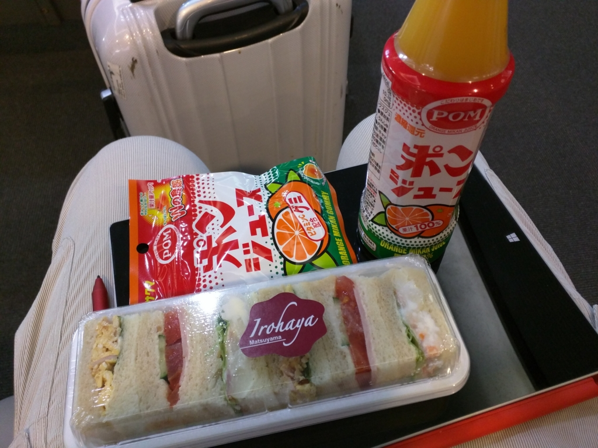
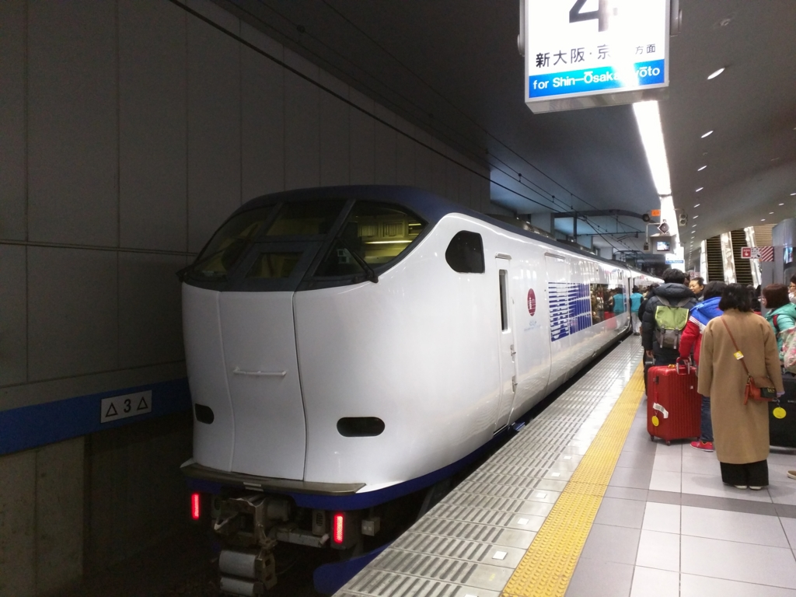
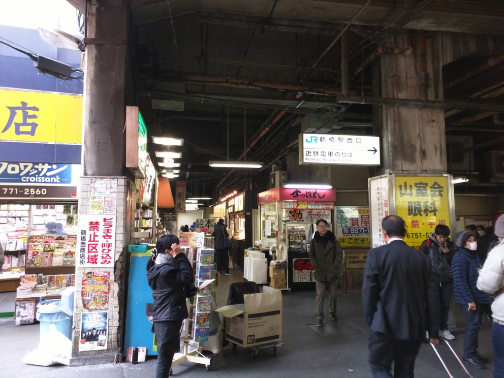
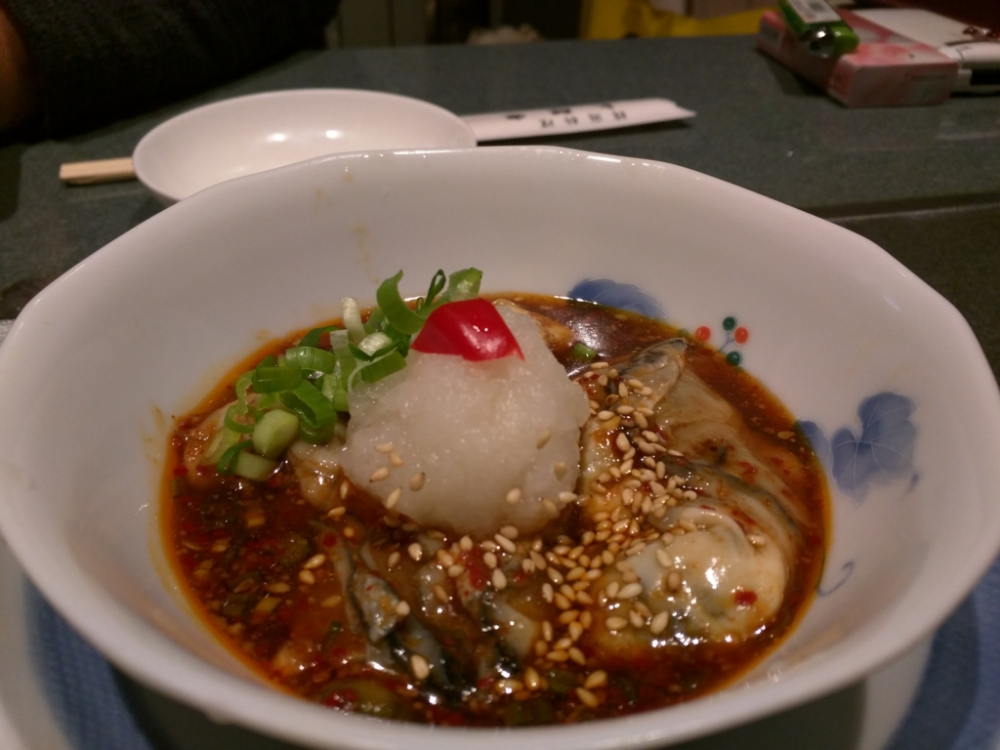
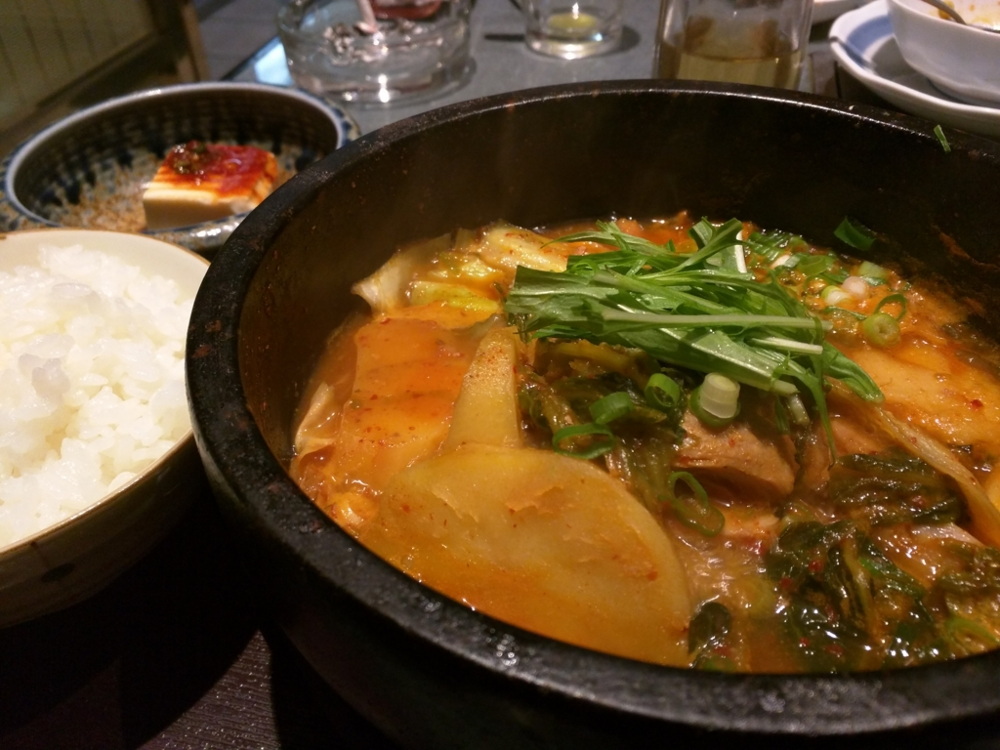
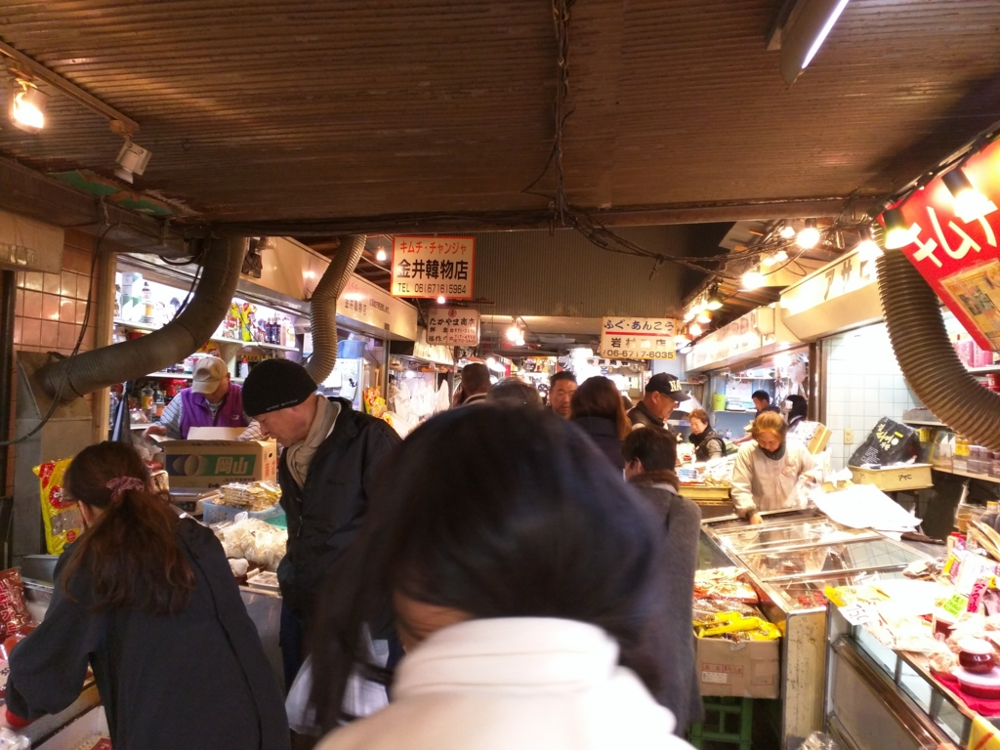
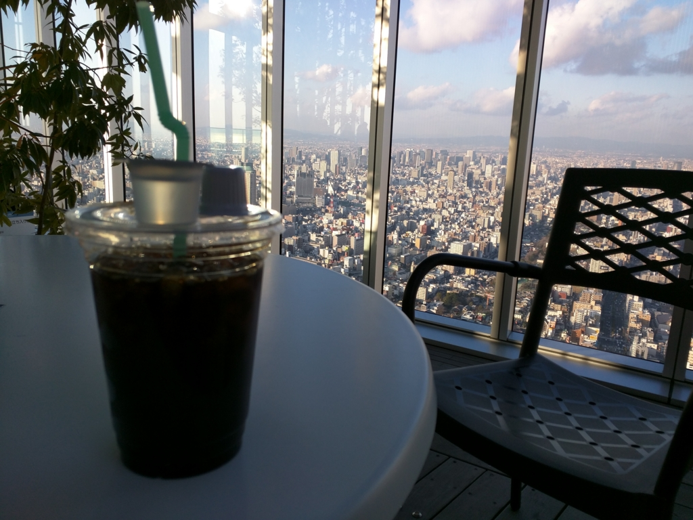
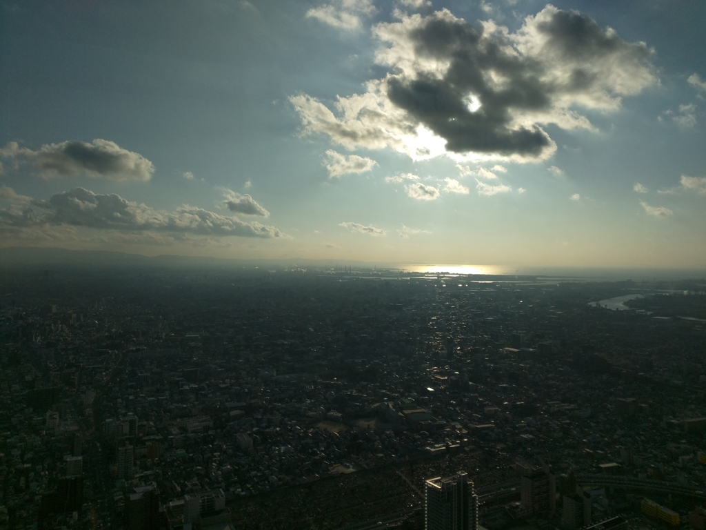

鶴橋 から あべのハルカス へ
公開日：

12月28日。墓参りと母校の同窓会出席のため、松山から大阪へ向かう。向こう2週間ほど帰ってこれないので、愛媛県民らしい朝ご飯を摂る。

朝の Peach 便で昼前に関空へ到着（ちなみに、同窓会でちょっと耳にしたところによると Peach の関西―松山便の収益は微妙らしい。ちゃんと使わないとなくなっちゃうやで！）。相変わらず、飛び立ったかと思うとすぐ到着なので笑える。
鶴橋で墓参りを一緒にしたいという母と待ち合わせしていたので、今回は南海の「ラピート」ではなく JR の「はるか」を使った。乗客の多くが中国人なのかな？ 中国語らしき会話が飛び交っている。

12時過ぎ、鶴橋着。来たのは10年ぶりぐらいかも。それにしても、この辺りは相変わらず怪しいな（というか、大阪の南半分はあんまり変わらんね）。
12時半ごろ、おかんが東京から合流。「大邱家」でランチをした。

カキのフェ（なんか辛くした刺身っぽいもの？）でビールをやりながら料理を待つ。
このお店は亡くなったおばあちゃんが贔屓にしていた店。“食べログ”ではみんな焼肉の話しかしていないが、ここは本来「どじょう汁」がウリで（記憶が確かならば）、うちのおかんも、亡くなったばあちゃんに教えられてここの「どじょう汁」が好きになったという。自分も「どじょう汁」を食べるまでは、韓国料理なんて辛いか酸っぱいかしかないと思っていた（ぁ

二人とも「どじょう汁」を食っても仕方ないので、自分はほかのスープをチョイス。名前は忘れた……というか、テールスープとカルビスープぐらいしかメニューがわからん。出てきたのは辛いジャガイモのスープだった。多少コレジャナイ感はあったけど、まぁまぁ、美味しかった。でも、これだったらお肉のランチ食えばよかったなｗ あんまり来ることないんだし。

そのあとは、ガード下の商店街を回った。ごま油と唐辛子のにおいで、頭が痛くなる。ここにもばあちゃん御用達の魚屋がある。亡くなったおばあちゃんはアンコウが大好きだったが、ここだと安く買えるらしい。おかんはアンコウだけじゃなく、なんか立派なフグまで買って、千葉に送りまくっていた。自分は知らなかったが、実家で食うフグ鍋のフグは、だいたいここから送ってもらってたらしい。おかんが執拗に値切るので、魚屋の大将がオレとしか話をしないのが不憫というか、笑えた。
それにしても、この商店街もずいぶん店が減ったように思う。昔は謎の脇道に謎の店が並び、謎な商品を売っていたが、脇道は塞がれていた。時代の流れなのだろうか。

そのあとは、母の希望で「あべのハルカス」へのぼった。日本で最も高い超高層ビルだそうで……高校生の頃、MIO ができた時に比べると天王寺もずいぶんハイカラになったものだと思う。
ちなみに、大阪をあまり知らない人たちのために言っておくと、「あべの（橋）」≒「天王寺」である。「梅田」≒「大阪」なのと同じだ。ほかに「難波（なんば）」≒「湊町」というのもかつてはあったが、関空ができたときあたりに「難波」に統一された。あと二つ空港を造れば、梅田と阿部野橋も統合されるのだろう。
――それはともかく。
1500円ぐらい払って、60階へ上る（ランチもぜんぶオレ持ちだ！！）。エレベーターのなかがとてもきれいだったのが印象的。

景色はさすがによい（住之江ってこっちの方かな？）。でも、日差しが差し込んでかなり暑かった。あと、上ってから思い出したけど、自分は高いところが苦手だった。なんか足元が透明になっているところがあって、思わず変なところから声が出た。ガラスから少し離れて、へっぴり腰で写真を撮っていると、うちのおばんが背中を押してくるので閉口した。シャレにならんからやめてほしい。
まぁ、なんだかんだいって大阪生まれなので、大阪に帰ってくるのは楽しい。今度は小さなきったない店でお好み焼きでも焼いて食べたい。